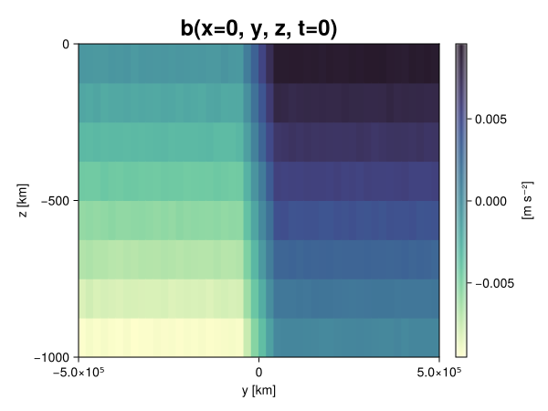
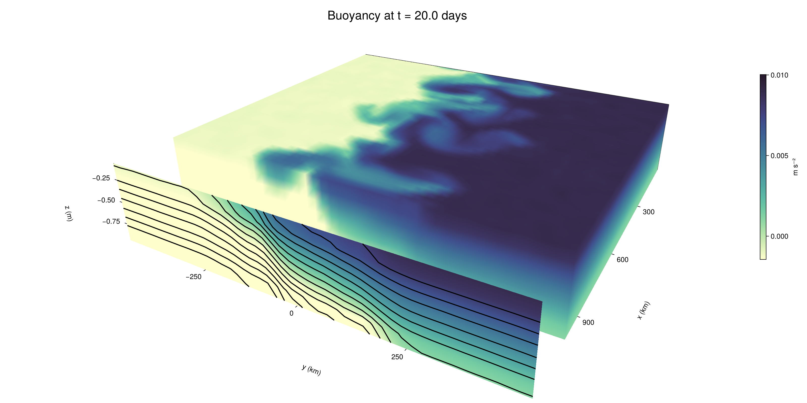

Baroclinic adjustment
In this example, we simulate the evolution and equilibration of a baroclinically unstable front.
Install dependencies
First let's make sure we have all required packages installed.
using Pkg
pkg"add Oceananigans, CairoMakie"using Oceananigans
using Oceananigans.UnitsGrid
We use a three-dimensional channel that is periodic in the x direction:
Lx = 1000kilometers # east-west extent [m]
Ly = 1000kilometers # north-south extent [m]
Lz = 1kilometers # depth [m]
grid = RectilinearGrid(size = (48, 48, 8),
x = (0, Lx),
y = (-Ly/2, Ly/2),
z = (-Lz, 0),
topology = (Periodic, Bounded, Bounded))48×48×8 RectilinearGrid{Float64, Periodic, Bounded, Bounded} on CPU with 3×3×3 halo
├── Periodic x ∈ [0.0, 1.0e6) regularly spaced with Δx=20833.3
├── Bounded y ∈ [-500000.0, 500000.0] regularly spaced with Δy=20833.3
└── Bounded z ∈ [-1000.0, 0.0] regularly spaced with Δz=125.0Model
We built a HydrostaticFreeSurfaceModel with an ImplicitFreeSurface solver. Regarding Coriolis, we use a beta-plane centered at 45° South.
model = HydrostaticFreeSurfaceModel(; grid,
coriolis = BetaPlane(latitude = -45),
buoyancy = BuoyancyTracer(),
tracers = :b,
momentum_advection = WENO(),
tracer_advection = WENO())HydrostaticFreeSurfaceModel{CPU, RectilinearGrid}(time = 0 seconds, iteration = 0)
├── grid: 48×48×8 RectilinearGrid{Float64, Periodic, Bounded, Bounded} on CPU with 3×3×3 halo
├── timestepper: QuasiAdamsBashforth2TimeStepper
├── tracers: b
├── closure: Nothing
├── buoyancy: BuoyancyTracer with ĝ = NegativeZDirection()
├── free surface: ImplicitFreeSurface with gravitational acceleration 9.80665 m s⁻²
│ └── solver: FFTImplicitFreeSurfaceSolver
├── advection scheme:
│ ├── momentum: WENO reconstruction order 5
│ └── b: WENO reconstruction order 5
└── coriolis: BetaPlane{Float64}We start our simulation from rest with a baroclinically unstable buoyancy distribution. We use ramp(y, Δy), defined below, to specify a front with width Δy and horizontal buoyancy gradient M². We impose the front on top of a vertical buoyancy gradient N² and a bit of noise.
"""
ramp(y, Δy)
Linear ramp from 0 to 1 between -Δy/2 and +Δy/2.
For example:
```
y < -Δy/2 => ramp = 0
-Δy/2 < y < -Δy/2 => ramp = y / Δy
y > Δy/2 => ramp = 1
```
"""
ramp(y, Δy) = min(max(0, y/Δy + 1/2), 1)
N² = 1e-5 # [s⁻²] buoyancy frequency / stratification
M² = 1e-7 # [s⁻²] horizontal buoyancy gradient
Δy = 100kilometers # width of the region of the front
Δb = Δy * M² # buoyancy jump associated with the front
ϵb = 1e-2 * Δb # noise amplitude
bᵢ(x, y, z) = N² * z + Δb * ramp(y, Δy) + ϵb * randn()
set!(model, b=bᵢ)Let's visualize the initial buoyancy distribution.
using CairoMakie
# Build coordinates with units of kilometers
x, y, z = 1e-3 .* nodes(grid, (Center(), Center(), Center()))
b = model.tracers.b
fig, ax, hm = heatmap(view(b, 1, :, :),
colormap = :deep,
axis = (xlabel = "y [km]",
ylabel = "z [km]",
title = "b(x=0, y, z, t=0)",
titlesize = 24))
Colorbar(fig[1, 2], hm, label = "[m s⁻²]")
fig
Simulation
Now let's build a Simulation.
simulation = Simulation(model, Δt=20minutes, stop_time=20days)Simulation of HydrostaticFreeSurfaceModel{CPU, RectilinearGrid}(time = 0 seconds, iteration = 0)
├── Next time step: 20 minutes
├── Elapsed wall time: 0 seconds
├── Wall time per iteration: NaN days
├── Stop time: 20 days
├── Stop iteration : Inf
├── Wall time limit: Inf
├── Callbacks: OrderedDict with 4 entries:
│ ├── stop_time_exceeded => Callback of stop_time_exceeded on IterationInterval(1)
│ ├── stop_iteration_exceeded => Callback of stop_iteration_exceeded on IterationInterval(1)
│ ├── wall_time_limit_exceeded => Callback of wall_time_limit_exceeded on IterationInterval(1)
│ └── nan_checker => Callback of NaNChecker for u on IterationInterval(100)
├── Output writers: OrderedDict with no entries
└── Diagnostics: OrderedDict with no entriesWe add a TimeStepWizard callback to adapt the simulation's time-step,
conjure_time_step_wizard!(simulation, IterationInterval(20), cfl=0.2, max_Δt=20minutes)Also, we add a callback to print a message about how the simulation is going,
using Printf
wall_clock = Ref(time_ns())
function print_progress(sim)
u, v, w = model.velocities
progress = 100 * (time(sim) / sim.stop_time)
elapsed = (time_ns() - wall_clock[]) / 1e9
@printf("[%05.2f%%] i: %d, t: %s, wall time: %s, max(u): (%6.3e, %6.3e, %6.3e) m/s, next Δt: %s\n",
progress, iteration(sim), prettytime(sim), prettytime(elapsed),
maximum(abs, u), maximum(abs, v), maximum(abs, w), prettytime(sim.Δt))
wall_clock[] = time_ns()
return nothing
end
add_callback!(simulation, print_progress, IterationInterval(100))Diagnostics/Output
Here, we save the buoyancy, $b$, at the edges of our domain as well as the zonal ($x$) average of buoyancy.
u, v, w = model.velocities
ζ = ∂x(v) - ∂y(u)
B = Average(b, dims=1)
U = Average(u, dims=1)
V = Average(v, dims=1)
filename = "baroclinic_adjustment"
save_fields_interval = 0.5day
slicers = (east = (grid.Nx, :, :),
north = (:, grid.Ny, :),
bottom = (:, :, 1),
top = (:, :, grid.Nz))
for side in keys(slicers)
indices = slicers[side]
simulation.output_writers[side] = JLD2OutputWriter(model, (; b, ζ);
filename = filename * "_$(side)_slice",
schedule = TimeInterval(save_fields_interval),
overwrite_existing = true,
indices)
end
simulation.output_writers[:zonal] = JLD2OutputWriter(model, (; b=B, u=U, v=V);
filename = filename * "_zonal_average",
schedule = TimeInterval(save_fields_interval),
overwrite_existing = true)JLD2OutputWriter scheduled on TimeInterval(12 hours):
├── filepath: baroclinic_adjustment_zonal_average.jld2
├── 3 outputs: (b, u, v)
├── array type: Array{Float64}
├── including: [:grid, :coriolis, :buoyancy, :closure]
├── file_splitting: NoFileSplitting
└── file size: 31.6 KiBNow we're ready to run.
@info "Running the simulation..."
run!(simulation)
@info "Simulation completed in " * prettytime(simulation.run_wall_time)[ Info: Running the simulation...
[ Info: Initializing simulation...
[00.00%] i: 0, t: 0 seconds, wall time: 28.661 seconds, max(u): (0.000e+00, 0.000e+00, 0.000e+00) m/s, next Δt: 20 minutes
[ Info: ... simulation initialization complete (28.450 seconds)
[ Info: Executing initial time step...
[ Info: ... initial time step complete (18.207 seconds).
[06.94%] i: 100, t: 1.389 days, wall time: 37.894 seconds, max(u): (1.290e-01, 1.224e-01, 1.520e-03) m/s, next Δt: 20 minutes
[13.89%] i: 200, t: 2.778 days, wall time: 914.474 ms, max(u): (2.241e-01, 1.953e-01, 1.781e-03) m/s, next Δt: 20 minutes
[20.83%] i: 300, t: 4.167 days, wall time: 895.731 ms, max(u): (2.903e-01, 2.392e-01, 1.790e-03) m/s, next Δt: 20 minutes
[27.78%] i: 400, t: 5.556 days, wall time: 850.929 ms, max(u): (3.584e-01, 3.458e-01, 1.870e-03) m/s, next Δt: 20 minutes
[34.72%] i: 500, t: 6.944 days, wall time: 883.060 ms, max(u): (4.276e-01, 4.995e-01, 1.924e-03) m/s, next Δt: 20 minutes
[41.67%] i: 600, t: 8.333 days, wall time: 1.003 seconds, max(u): (5.350e-01, 7.133e-01, 2.425e-03) m/s, next Δt: 20 minutes
[48.61%] i: 700, t: 9.722 days, wall time: 912.956 ms, max(u): (7.384e-01, 1.047e+00, 3.273e-03) m/s, next Δt: 20 minutes
[55.56%] i: 800, t: 11.111 days, wall time: 915.431 ms, max(u): (1.009e+00, 1.147e+00, 3.960e-03) m/s, next Δt: 20 minutes
[62.50%] i: 900, t: 12.500 days, wall time: 845.277 ms, max(u): (1.245e+00, 1.260e+00, 4.848e-03) m/s, next Δt: 20 minutes
[69.44%] i: 1000, t: 13.889 days, wall time: 877.678 ms, max(u): (1.386e+00, 1.366e+00, 4.633e-03) m/s, next Δt: 20 minutes
[76.39%] i: 1100, t: 15.278 days, wall time: 877.118 ms, max(u): (1.315e+00, 1.307e+00, 5.352e-03) m/s, next Δt: 20 minutes
[83.33%] i: 1200, t: 16.667 days, wall time: 927.333 ms, max(u): (1.297e+00, 1.359e+00, 3.928e-03) m/s, next Δt: 20 minutes
[90.28%] i: 1300, t: 18.056 days, wall time: 921.083 ms, max(u): (1.355e+00, 1.427e+00, 3.715e-03) m/s, next Δt: 20 minutes
[97.22%] i: 1400, t: 19.444 days, wall time: 938.217 ms, max(u): (1.462e+00, 1.377e+00, 3.973e-03) m/s, next Δt: 20 minutes
[ Info: Simulation is stopping after running for 1.047 minutes.
[ Info: Simulation time 20 days equals or exceeds stop time 20 days.
[ Info: Simulation completed in 1.048 minutes
Visualization
All that's left is to make a pretty movie. Actually, we make two visualizations here. First, we illustrate how to make a 3D visualization with Makie's Axis3 and Makie.surface. Then we make a movie in 2D. We use CairoMakie in this example, but note that using GLMakie is more convenient on a system with OpenGL, as figures will be displayed on the screen.
using CairoMakieThree-dimensional visualization
We load the saved buoyancy output on the top, north, and east surface as FieldTimeSerieses.
filename = "baroclinic_adjustment"
sides = keys(slicers)
slice_filenames = NamedTuple(side => filename * "_$(side)_slice.jld2" for side in sides)
b_timeserieses = (east = FieldTimeSeries(slice_filenames.east, "b"),
north = FieldTimeSeries(slice_filenames.north, "b"),
top = FieldTimeSeries(slice_filenames.top, "b"))
B_timeseries = FieldTimeSeries(filename * "_zonal_average.jld2", "b")
times = B_timeseries.times
grid = B_timeseries.grid48×48×8 RectilinearGrid{Float64, Periodic, Bounded, Bounded} on CPU with 3×3×3 halo
├── Periodic x ∈ [0.0, 1.0e6) regularly spaced with Δx=20833.3
├── Bounded y ∈ [-500000.0, 500000.0] regularly spaced with Δy=20833.3
└── Bounded z ∈ [-1000.0, 0.0] regularly spaced with Δz=125.0We build the coordinates. We rescale horizontal coordinates to kilometers.
xb, yb, zb = nodes(b_timeserieses.east)
xb = xb ./ 1e3 # convert m -> km
yb = yb ./ 1e3 # convert m -> km
Nx, Ny, Nz = size(grid)
x_xz = repeat(x, 1, Nz)
y_xz_north = y[end] * ones(Nx, Nz)
z_xz = repeat(reshape(z, 1, Nz), Nx, 1)
x_yz_east = x[end] * ones(Ny, Nz)
y_yz = repeat(y, 1, Nz)
z_yz = repeat(reshape(z, 1, Nz), grid.Ny, 1)
x_xy = x
y_xy = y
z_xy_top = z[end] * ones(grid.Nx, grid.Ny)Then we create a 3D axis. We use zonal_slice_displacement to control where the plot of the instantaneous zonal average flow is located.
fig = Figure(size = (1600, 800))
zonal_slice_displacement = 1.2
ax = Axis3(fig[2, 1],
aspect=(1, 1, 1/5),
xlabel = "x (km)",
ylabel = "y (km)",
zlabel = "z (m)",
xlabeloffset = 100,
ylabeloffset = 100,
zlabeloffset = 100,
limits = ((x[1], zonal_slice_displacement * x[end]), (y[1], y[end]), (z[1], z[end])),
elevation = 0.45,
azimuth = 6.8,
xspinesvisible = false,
zgridvisible = false,
protrusions = 40,
perspectiveness = 0.7)Axis3()We use data from the final savepoint for the 3D plot. Note that this plot can easily be animated by using Makie's Observable. To dive into Observables, check out Makie.jl's Documentation.
n = length(times)41Now let's make a 3D plot of the buoyancy and in front of it we'll use the zonally-averaged output to plot the instantaneous zonal-average of the buoyancy.
b_slices = (east = interior(b_timeserieses.east[n], 1, :, :),
north = interior(b_timeserieses.north[n], :, 1, :),
top = interior(b_timeserieses.top[n], :, :, 1))
# Zonally-averaged buoyancy
B = interior(B_timeseries[n], 1, :, :)
clims = 1.1 .* extrema(b_timeserieses.top[n][:])
kwargs = (colorrange=clims, colormap=:deep, shading=NoShading)
surface!(ax, x_yz_east, y_yz, z_yz; color = b_slices.east, kwargs...)
surface!(ax, x_xz, y_xz_north, z_xz; color = b_slices.north, kwargs...)
surface!(ax, x_xy, y_xy, z_xy_top; color = b_slices.top, kwargs...)
sf = surface!(ax, zonal_slice_displacement .* x_yz_east, y_yz, z_yz; color = B, kwargs...)
contour!(ax, y, z, B; transformation = (:yz, zonal_slice_displacement * x[end]),
levels = 15, linewidth = 2, color = :black)
Colorbar(fig[2, 2], sf, label = "m s⁻²", height = Relative(0.4), tellheight=false)
title = "Buoyancy at t = " * string(round(times[n] / day, digits=1)) * " days"
fig[1, 1:2] = Label(fig, title; fontsize = 24, tellwidth = false, padding = (0, 0, -120, 0))
rowgap!(fig.layout, 1, Relative(-0.2))
colgap!(fig.layout, 1, Relative(-0.1))
save("baroclinic_adjustment_3d.png", fig)
Two-dimensional movie
We make a 2D movie that shows buoyancy $b$ and vertical vorticity $ζ$ at the surface, as well as the zonally-averaged zonal and meridional velocities $U$ and $V$ in the $(y, z)$ plane. First we load the FieldTimeSeries and extract the additional coordinates we'll need for plotting
ζ_timeseries = FieldTimeSeries(slice_filenames.top, "ζ")
U_timeseries = FieldTimeSeries(filename * "_zonal_average.jld2", "u")
B_timeseries = FieldTimeSeries(filename * "_zonal_average.jld2", "b")
V_timeseries = FieldTimeSeries(filename * "_zonal_average.jld2", "v")
xζ, yζ, zζ = nodes(ζ_timeseries)
yv = ynodes(V_timeseries)
xζ = xζ ./ 1e3 # convert m -> km
yζ = yζ ./ 1e3 # convert m -> km
yv = yv ./ 1e3 # convert m -> km49-element Vector{Float64}:
-500.0
-479.1666666666667
-458.3333333333333
-437.5
-416.6666666666667
-395.8333333333333
-375.0
-354.1666666666667
-333.3333333333333
-312.5
-291.6666666666667
-270.8333333333333
-250.0
-229.16666666666666
-208.33333333333334
-187.5
-166.66666666666666
-145.83333333333334
-125.0
-104.16666666666667
-83.33333333333333
-62.5
-41.666666666666664
-20.833333333333332
0.0
20.833333333333332
41.666666666666664
62.5
83.33333333333333
104.16666666666667
125.0
145.83333333333334
166.66666666666666
187.5
208.33333333333334
229.16666666666666
250.0
270.8333333333333
291.6666666666667
312.5
333.3333333333333
354.1666666666667
375.0
395.8333333333333
416.6666666666667
437.5
458.3333333333333
479.1666666666667
500.0Next, we set up a plot with 4 panels. The top panels are large and square, while the bottom panels get a reduced aspect ratio through rowsize!.
set_theme!(Theme(fontsize=24))
fig = Figure(size=(1800, 1000))
axb = Axis(fig[1, 2], xlabel="x (km)", ylabel="y (km)", aspect=1)
axζ = Axis(fig[1, 3], xlabel="x (km)", ylabel="y (km)", aspect=1, yaxisposition=:right)
axu = Axis(fig[2, 2], xlabel="y (km)", ylabel="z (m)")
axv = Axis(fig[2, 3], xlabel="y (km)", ylabel="z (m)", yaxisposition=:right)
rowsize!(fig.layout, 2, Relative(0.3))To prepare a plot for animation, we index the timeseries with an Observable,
n = Observable(1)
b_top = @lift interior(b_timeserieses.top[$n], :, :, 1)
ζ_top = @lift interior(ζ_timeseries[$n], :, :, 1)
U = @lift interior(U_timeseries[$n], 1, :, :)
V = @lift interior(V_timeseries[$n], 1, :, :)
B = @lift interior(B_timeseries[$n], 1, :, :)Observable([-0.009370072548616324 -0.008145941106236051 -0.006853459249360584 -0.005634870601824277 -0.004372607065732065 -0.0031453348176437505 -0.0018730816638131678 -0.0006070745282489899; -0.009385764082093708 -0.008107366259876294 -0.006873046793758841 -0.005632281206985809 -0.004380997653764339 -0.0031128289668356517 -0.0018771074592414151 -0.0006002716873393766; -0.009411764138613585 -0.008124794315649012 -0.006858683633201486 -0.005654442223463059 -0.004364754221216702 -0.0031172366035727727 -0.0018677995411137823 -0.000631666235821302; -0.009377166138901953 -0.008119481236651307 -0.006860690479014576 -0.005637272390268393 -0.004379049118710981 -0.0031054828461863026 -0.0018831227750044158 -0.0006384673436145293; -0.009400276443184334 -0.008120451326353903 -0.00689369316264767 -0.0056530119712485056 -0.004372672981588813 -0.0031324233724858036 -0.0018856215320613237 -0.0006316012465036891; -0.009367023063214965 -0.008118700527838167 -0.0068689175692456935 -0.005598181623841412 -0.00438319147061031 -0.0031338639240020005 -0.0018829897736345818 -0.000613137343844294; -0.009354419531845225 -0.008114076454025282 -0.006876749664903846 -0.005610599796093085 -0.004341728260800669 -0.0031382725175585525 -0.001880559882806172 -0.000601951654796803; -0.009370664896813286 -0.008124825079462517 -0.006901397810850991 -0.005620848095633765 -0.004387893404233851 -0.0031085451604795137 -0.0018721110776310724 -0.0006147129151354989; -0.009392144219601677 -0.008096091900239341 -0.006874280303003443 -0.005615189126947754 -0.004361515834455486 -0.0031143582058478017 -0.0018659197524524944 -0.0006296940173837617; -0.009409598804907554 -0.008145792130096629 -0.006880304306808524 -0.005627049370360006 -0.004383270030534795 -0.0031128605590343065 -0.001913905321810211 -0.000594969065657569; -0.00936573906736621 -0.008138980213937897 -0.00688615433423162 -0.0056415339032511716 -0.0043828653902564345 -0.0031337562436262547 -0.0018788789831577378 -0.0006549484377833658; -0.009373053277410887 -0.00814016465443587 -0.006877673887320704 -0.00561444763727148 -0.004418412825518729 -0.0031170458920374874 -0.001887000792772794 -0.000609323865869534; -0.009356023588992962 -0.008089518287568225 -0.0069097975157467574 -0.00561928695024206 -0.004388826952337974 -0.0031084544963001746 -0.0018660204324513691 -0.0006329212164938022; -0.009377858256126125 -0.008118566223765219 -0.0068715408807151135 -0.0056495834799526285 -0.00438022706876601 -0.0031277762305578077 -0.001841344960003118 -0.0006195062067921504; -0.009354568105259873 -0.00813419433650439 -0.006863447480083319 -0.005630881965935587 -0.004350965792153556 -0.003129221729217592 -0.0018607486523941885 -0.0006202274966655096; -0.009415599198682649 -0.008109461300431695 -0.006879575225116376 -0.0056388513093467525 -0.004371936834842727 -0.0031086491660415375 -0.0018665244342176174 -0.0006146728276531469; -0.009375115928271624 -0.00812664599888495 -0.006881926915091788 -0.005610388135163597 -0.0043735476662806185 -0.0031338121696866932 -0.0018752615576350697 -0.0006614669646857925; -0.00938681330711244 -0.008140031418720923 -0.006888206828719459 -0.005650055466825936 -0.004347800614525382 -0.0031313981886631516 -0.001868245250056173 -0.0006048776704526631; -0.00937335536890078 -0.008138485897898153 -0.006884910054195763 -0.005608867064131916 -0.004374113165400648 -0.003151259054827431 -0.0018624169831668082 -0.0006353486681983999; -0.009373980248546422 -0.00815257868476462 -0.006880964149736238 -0.005634673973996967 -0.004397672668369292 -0.0031320692700369593 -0.0018570722581443798 -0.000628983649592631; -0.009395537743297907 -0.008112919278485817 -0.006861765508431386 -0.005634404391688534 -0.004358874384122968 -0.0031343280711740354 -0.0018831154498133238 -0.0006265152722812101; -0.009391587433738904 -0.008137577955551699 -0.00688060026881531 -0.005621703953050894 -0.004358490641446745 -0.0031134997892398714 -0.0019005584617713823 -0.0006534371498765436; -0.007499028688684452 -0.0062420538813869435 -0.005019699676619687 -0.0037662408477430374 -0.0025152278239203396 -0.0012224311569063436 -2.599837158530223e-6 0.0012321917197831201; -0.0054348672987678676 -0.004167880912876214 -0.0029058485309929084 -0.0016703964679107366 -0.00043666288577078163 0.0008499620632937416 0.00208139549573884 0.0033248571845177835; -0.003331264007980079 -0.0020890417021259627 -0.0008530209140471047 0.00042348902118887963 0.0016531547334119668 0.002933373557492939 0.004159205634690171 0.005438887550317804; -0.0012578715952625591 7.192345905974495e-8 0.0012552886387139838 0.0024703694424520555 0.0037362440329856486 0.004997815423072258 0.006252572848219592 0.0074913606213173126; 0.0006294599634248278 0.0018476562025441234 0.0031241075131373786 0.004382982527138815 0.005624324651998335 0.006845996827172014 0.008115806622957031 0.009360325490792952; 0.0006289403480999332 0.0018709127799056086 0.0031228090363646724 0.004383265847530669 0.005612859522471147 0.006892253375677083 0.008117832836225058 0.009380642199797297; 0.0006293382508736047 0.0019020592476920086 0.0031314653335541356 0.00436063138738826 0.00561707058819964 0.006850178075810373 0.008124946914868807 0.009396715505069582; 0.0006096634598142906 0.0018826135500948965 0.0031292323242355096 0.00436868320631037 0.005647908030607757 0.0068634036004604345 0.008127903015631101 0.009373230658200839; 0.0006261621697998021 0.001912217726733866 0.0031217049778696523 0.004372947641599194 0.0056165540265468205 0.006885788231114 0.008116164169742335 0.009383102124593631; 0.0006488589895528451 0.0018857209274915632 0.003121444446346006 0.004375724181416546 0.005633800028217943 0.006895035858454972 0.008093237670260652 0.009364321124950805; 0.0006327660858487652 0.0018649560079920674 0.003099262076433957 0.004358866321552998 0.00561396815487017 0.006900717270320857 0.008126718631084742 0.009380537154629715; 0.0006035692399268044 0.0018998443835099342 0.0031153975541272066 0.004378951030256043 0.005588101812583117 0.0068985172888775285 0.008131420537696533 0.009380119063700926; 0.0006108566895346873 0.001881609631516867 0.003138607000125962 0.004407012648216372 0.005626693320898799 0.006878508002741907 0.00812650645349694 0.009374775720263333; 0.0006120396256044132 0.001855634367529558 0.0031168959188041714 0.004387176654029219 0.005620515287275487 0.006873662513559427 0.00812417530802578 0.009395960708709069; 0.0006236319650316517 0.0018722005136948862 0.0031249398314895857 0.004375975157115926 0.0056346355277442075 0.006853050878242631 0.00811599814964409 0.009327540641402518; 0.0006589584054669555 0.0018667589663184485 0.003103522152110582 0.004391403290793618 0.005622851281785177 0.006908213567695033 0.008122924905926997 0.00938867863940699; 0.0006137770436139204 0.0018812325058088087 0.003147661608243604 0.0043731348993164675 0.005616154865079329 0.006881103465233 0.008141262454892951 0.009387691926666887; 0.0006241666480348585 0.0018698830948717365 0.0031229101509428234 0.0043633874477235985 0.005606363315216225 0.006875656250356437 0.008138485586230504 0.009393561227152913; 0.0006091314719279653 0.0019019463209094787 0.0031180737923632864 0.004366741628183539 0.005632546449600452 0.0068807521059556275 0.008120984994732886 0.009401758515858038; 0.000633408936168425 0.0018822184171113495 0.003131883081393885 0.004385575616429475 0.005633636314111355 0.006874357216239777 0.00813162978782792 0.009367650425902594; 0.0006334512445406371 0.0018651360219954247 0.0031118456002708858 0.0043678077391410336 0.005633611763959698 0.006870851824746301 0.008123328778683834 0.009376508206201577; 0.0006255993718364306 0.0018652064903816057 0.003127776522339805 0.004370653352113342 0.005625317929638413 0.0068689275316138635 0.008139845003601867 0.009393107628010204; 0.0005948057026230321 0.001861519887838242 0.0031185651024239927 0.0043723000575752275 0.005621397532410002 0.006868368948465646 0.008119592721915174 0.009381762316299112; 0.0006408781967430014 0.0018713738320333942 0.0031326377588726494 0.004348765947090357 0.005616388251290461 0.006858862910953323 0.008122023951915245 0.009372988145413355; 0.0006426477427015524 0.001861684068105495 0.003113510538849878 0.004351190249476108 0.00561717725964173 0.006868213528599854 0.008123425379591579 0.009383428421564389; 0.0006090864243428742 0.001872452913554733 0.003112610443586549 0.004380584779669652 0.005629600553013897 0.00691127608971984 0.008150270780270539 0.009366676642115554])
and then build our plot:
hm = heatmap!(axb, xb, yb, b_top, colorrange=(0, Δb), colormap=:thermal)
Colorbar(fig[1, 1], hm, flipaxis=false, label="Surface b(x, y) (m s⁻²)")
hm = heatmap!(axζ, xζ, yζ, ζ_top, colorrange=(-5e-5, 5e-5), colormap=:balance)
Colorbar(fig[1, 4], hm, label="Surface ζ(x, y) (s⁻¹)")
hm = heatmap!(axu, yb, zb, U; colorrange=(-5e-1, 5e-1), colormap=:balance)
Colorbar(fig[2, 1], hm, flipaxis=false, label="Zonally-averaged U(y, z) (m s⁻¹)")
contour!(axu, yb, zb, B; levels=15, color=:black)
hm = heatmap!(axv, yv, zb, V; colorrange=(-1e-1, 1e-1), colormap=:balance)
Colorbar(fig[2, 4], hm, label="Zonally-averaged V(y, z) (m s⁻¹)")
contour!(axv, yb, zb, B; levels=15, color=:black)Finally, we're ready to record the movie.
frames = 1:length(times)
record(fig, filename * ".mp4", frames, framerate=8) do i
n[] = i
endThis page was generated using Literate.jl.